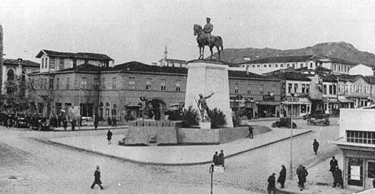

Ankara'da yerleşim tarihi Tunç Çağı Hatti uygarlığına kadar uzanmaktadır. Bunu milattan önce ikinci milenyumda Hitit uygarlığı dönemi, milattan önce onuncu yüzyıldaki Frigya uygarlığı dönemi ve sonrasında sırasıyla Lidyalılar, Farslar, Makedonlar, Galatyalılar, Roma İmparatorluğu, Bizans İmparatorluğu, Selçuklu Hanedanı ve Osmanlı İmparatorluğu dönemleri takip etmektedir.Ankara adının kaynağı kesin olarak bilinememektedir. Belgelere dayanmayan ve günümüze kadar gelen söylentilere göre tarihte bahsedilen ilk adı Galatlar tarafından verilen ve Yunanca "çapa" anlamına gelen Ankyra'dır. Bu isim zamanla değişerek Ancyre, Engüriye, Engürü, Angara, Angora ve nihayet Ankara olmuştur.
Anadolu'daki insan karakterli ilk fosil primat kalıntıları Fikret Ozansoy tarafından Ankara'da bulunmuş ve Ankarapithecus meteai adı verilmiştir.
Ankara'nın bilinen tarihi Paleolitik Çağa kadar uzanmaktadır. Bu döneme ait çeşitli eserlere Gâvurkale, Ergazi, Lodumlu ve Maltepe'de rastlanmıştır.
Eti Yokuşu'nda 1937'de Türk Tarih Kurumu tarafından yapılan ve Prof. Dr. Şevket Aziz Kansu tarafından idare edilen kazıların raporu Etiyokuşu hafriyatı raporu adıyla 1937'de basılmıştır. Bu raporda buranın en az MÖ 3000 yıllarında iskan edildi belirtilmektedir. Raporda birinci kısımda graviye içinde elde edilen Paleolitk aletler, ikinci kısımda ise Kalkslitik yerleşim yerinde toplanan keramik ve diğer çeşitli kültür piyesleri ayrıntılı olarak incelenmiş ve envanterleri yayınlanmıştır.
Ankara'nın eskiliği ile ilgili buluntular Anadolu Medeniyetleri Müzesi Çağlar boyu Ankara galerisinde sergilenmektedir. İlk basımı 1950 olan Avram Galanti'ye ait Ankara Tarihi Kitabı II. bölümde buluntular gösterilmektedir.
Hitit İmparatorluğu"nun tarihe karışmasından sonra kent ve çevresi M.Ö. 8-7. yüzyıllarda Frig egemenliğine girer. Ankara'daki ilk önemli yerleşme Frigler döneminde olur. Bu dönemin izlerine Augustus Tapınağı'nın duvarlarında rastlanır. Friglerin ana tanrıçası Kibele'nin oturduğu tepenin bugünkü Hacı Bayram Camii ve çevresi olduğu yapılan kazılarda bulunan Frig kalıntıları ile gösterilmiştir. Geç Hitit ve Frig kabartmaları Atatürk Orman Çiftliği/tren istasyonu, Bahçelievler, Gölbaşı ve Etimesgut'ta ele geçirilmiştir. Ayrıca Atatürk Orman Çiftliği, Anıtkabir ve Bahçelievler arasında Frig nekropolünü oluşturan birçok tümülüs bulunmuştur. Bulunan bu eserler Anadolu Medeniyetler Müzesi ile ODTÜ Müzesi'nde sergilenmektedir. Bunun yanında Ulus kazısı, Karaoğlan, Hacılar, Bitik, Sincan höyüklerinde, Sincan/Tatlar, Ayaş/Gökler, Beypazarı/Boyalı-Fasılkaya ve Güdül/Kirmir Çayı Vadisi'nin kaya mağaralarında Frig eserleri görülmüştür. Bu döneme ait en fazla eser Gordion'dadır.